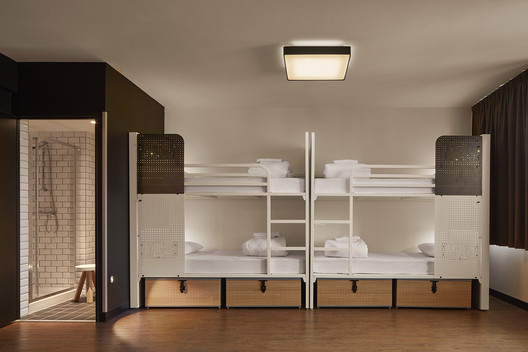
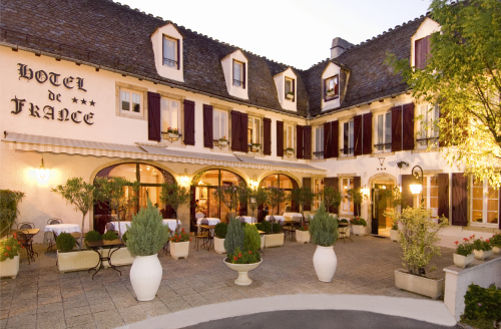

Самыми доступными по цене являются хостелы. Чаще всего ими пользуется молодежь. Во французских хостелах в комнате может быть от 5 до 20 кроватей, и плату обычно берут именно за спальное место. Иногда в цену входит скромный завтрак, но бывает и так, что владельцы хостелов оборудуют небольшую кухню, где можно что-то приготовить. Случается, что в хостелах есть ограничения по возрасту. Об этом лучше узнавать заранее.
К достаточно бюджетному жилью во Франции относятся сетевые отели. Они «раскиданы» по всей стране, у каждой сети есть свой сайт, где можно бронировать номера. В отелях Premiere Classe, Formule 1, Etap и некоторых других удобства иногда бывают на этаже. Сетевые отели классом повыше – Balladins, B&B, Kyriad, Campanile. Здесь удобства будут непременно в номере. Комнаты бывают как на двух человек, так и на трех-четырех. Примерная стоимость номера для двух человек – 50-60 евро, на четырех – 70-80 евро (в зависимости от сезона). Тут путешественники получат комфорт за небольшие деньги. Завтраки (круассан, джем, чай-кофе, йогурт, кукурузные хлопья и молоко) в таких отелях оплачиваются на месте и лишь по желанию туриста.
Сами французы, выезжающие отдыхать, любят кемпинги, но они, работают, конечно, только в теплое время года, примерно с мая по сентябрь. Кемпинг удобен для семей с детьми. Туда все приезжают на автомобилях. Есть варианты кемпингов, где народ ставит свои палатки или сразу приезжает на домах на колесах, но можно отыскать и кемпинг с домиками для проживания. На территории кемпингов, расположенных вдали от городов, среди полей, лесов и гор, обычно бывают бассейны (как минимум для детей) и игровые площадки.
Хорошую возможность пожить с комфортом, присмотреться к быту французов, узнать, как у них проходят завтраки и устроен интерьер домов, предоставляют фермы (обычно на дверях сельского дома, хозяева которого предлагают пожить у них, висит табличка Chambre d'hôtes). Для их поиска существуют специальные сайты. На летний период бронировать такое жилье нужно заранее. Это будет сравнимо со стоимостью трехзвездочного отеля, но находиться в доме гораздо приятнее. А в качестве приятных бонусов вас может ждать бассейн, лежаки на лужайке у дома и отсутствие шумных соседей по ночам.
Другим способом прикоснуться к французским реалиям является жилье в замках. Стоимость ночевки в таких местах сильно зависит от того, большой замок или маленький, насколько просто или, наоборот, с шиком устроено все внутри, а также от региона, в котором он расположен. Но в любом, даже самом скромном замке есть, конечно, все удобства.
Наверх